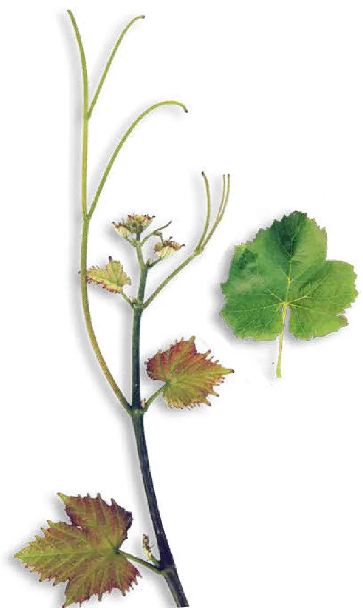

Kapitel 3 · Die portugiesischen Rebsorten
Alicante Bouschet (R) / Garnacha Tintorera
Herkunft:
Diese Sorte wurde 1855 von Louis und Henri Bouschet in Mauguio (Hérault) durch Kreuzung von Grenache mit Petit Bouschet (Aramon x Teinturier du Cher) gewonnen und Ende des 19. Jahrhunderts von englischen Einwanderern im Alentejo in Portugal eingeführt.
Weinbeschreibung:
Die Weine haben krautige Aromen und Aromen roter Früchte, die an reife Pflaumenkonfitüre erinnern. Eine aromatische Sorte mit Noten von Beeren, Kakao und Oliven. Beim Fassausbau treten Noten von Kakao, dunkler Schokolade und exotischen Gewürzen hervor; es können sich auch Aromen von Leder, Wild und balsamische Noten entwickeln.

Regionale Einstufung:
aufgeführt in den Katalogen folgender Mitgliedstaaten der Europäischen Union: Frankreich, Bulgarien, Zypern, Spanien, Griechenland, Italien und Portugal.
Morphologie:
Junger Trieb (Form der Triebspitze): offen, mit dichter anliegender Behaarung und randständiger Anthocyanfärbung.
Junges Blatt: grün mit kupferfarbenen Bereichen, dichte anliegende Behaarung auf der Blattunterseite.
Trieb: rot gestreifte Internodien.
Blüte: zwittrig.
Ausgewachsenes Blatt: mittelgroß, rundlich, angedeutet dreilappig; Spreite dunkelgrün, zurückgerollt, schwach blasig; anliegende Behaarung mittlerer Dichte auf der Unterseite; mittelgroße, gerade Zähne. Stielbucht leicht offen mit V-förmigem Grund, obere Seitenbuchten V-förmig offen.
Beere: rund, mittelgroß, blauschwarz, mit gefärbtem Fruchtfleisch.
Holztrieb: rot gestreift, mit leicht rötlichen Knospen.
Kern: gelbbraun.
Phänologie:
Austrieb: 4 Tage nach Chasselas.
Blüte: früh, 2 Tage nach der Castelão.
Farbumschlag: mittelfrüh, 2 Tage vor der Castelão.
Traubenreife: spät, zwei Wochen nach der Castelão.
Vegetatives und agronomisches Potenzial:
Die Sorte ist recht wüchsig, muss aber kurz geschnitten werden, da sie zur Erschöpfung neigt. Zudem ist sie recht windempfindlich. Sie ist recht anfällig für Falschen Mehltau, Phomopsis, Goldgelbe Vergilbung (Flavescence dorée) und Bakteriennekrose, ebenso für Holzkrankheiten. In Frankreich wird diese Färbertraube vor allem wegen ihres Farbbeitrags verwendet. Dank der stärkeren heliothermischen Bedingungen in Portugal kann sie hier hochwertige Weine hervorbringen. Es gibt 5 französische Klone; in Portugal sind keine Klonselektionen zugelassen.

Önologie:
In Frankreich gewonnene Weine haben einen guten Körper, sind aber oft flach und es fehlt ihnen an Finesse und Eleganz. Warme Gebiete Portugals und Spaniens eignen sich für die Erzeugung von Qualitätswein.
(Quelle: Folha informativa da INIAV Dois Portos)